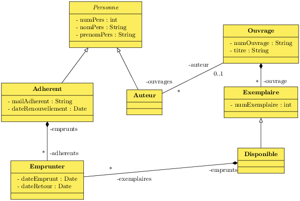

A.10 Bibliothèque

drop table emprunter;
drop table exemplaire;
drop table ouvrage;
drop table adherent;
drop table personne;
create table personne
(
numpers int primary key auto_increment,
nompers varchar(64),
prenompers varchar(64)
);
create table adherent
(
numpers int primary key,
mailadherent varchar(64),
daterenouvellement date,
foreign key (numpers) references personne(numpers)
);
create table ouvrage
(
numouvrage int primary key auto_increment,
numauteur int,
titreouvrage varchar(64),
foreign key (numauteur) references personne(numpers)
);
create table exemplaire
(
numouvrage int,
numexemplaire int,
empruntable boolean default true,
primary key (numouvrage, numexemplaire),
foreign key (numouvrage) references ouvrage(numouvrage)
);
create table emprunter
(
numadherent int,
numouvrage int,
numexemplaire int,
dateemprunt date,
dateretour date default null,
primary key (numadherent, numouvrage, numexemplaire, dateemprunt),
foreign key (numadherent) references adherent(numpers),
foreign key (numouvrage, numexemplaire) references exemplaire(numouvrage, numexemplaire),
check (dateemprunt < dateretour)
);
drop view adherents;
create view adherents as
select p.numpers, nompers, prenompers, mailadherent
from adherent a, personne p
where p.numpers = a.numpers;
drop view auteurs;
create view auteurs as
select *
from personne
where numpers not in
(select numpers
from adherent
);
drop view exemplaires;
create view exemplaires as
select o.numouvrage, numexemplaire, titreouvrage, concat(nompers, ", ", prenompers) as auteur
from personne p, ouvrage o, exemplaire e
where p.numpers = o.numauteur
and o.numouvrage = e.numouvrage;
Télécharger le fichier